3D orbital explorer
Propagates ISS TLE elements with SGP4, showing approximate positions and orbital metrics. The 3D globe is stylized, not a geodetic map.
OPEN-SOURCE AEROSPACE AI / SOFTWARE ENGINEERING PORTFOLIO
AstraSentinel AI brings satellite orbit propagation, public geomagnetic observations, synthetic telemetry anomaly detection and a rocket physics sandbox into one research dashboard.
Scientific demo only · no private spacecraft access · no official space-agency affiliation
/ WHAT THIS PROJECT ACTUALLY IMPLEMENTS
The downloadable repository runs a Python API, a browser dashboard and deterministic research reports. Some source data is public, while spacecraft health records are explicitly synthetic.
Propagates ISS TLE elements with SGP4, showing approximate positions and orbital metrics. The 3D globe is stylized, not a geodetic map.
Trains and evaluates an IsolationForest on synthetic sensor readings with transparent fault-injection metrics and feature deviations.
Reads publicly available NOAA SWPC planetary Kp observations online, with source freshness and clearly labeled offline fallback.
Models vertical ascent using variable rocket mass, inverse-square gravity, exponential air density and quadratic drag.
Runs bounded one-factor parameter sweeps, compares apogee and aerodynamic loading, and exports experimental CSV/JSON.
Generates deterministic scientific demo datasets and visualization artifacts, with automated Python, React and Docker checks.
/ VERIFIED RUNNING APPLICATION · OFFLINE DEMO
These are screenshots taken automatically by Playwright from a running React/FastAPI application in Chromium. They are NOT interface concepts. Orbital elements are an old bundled example; weather and spacecraft health records are synthetic, not real-time measurements.
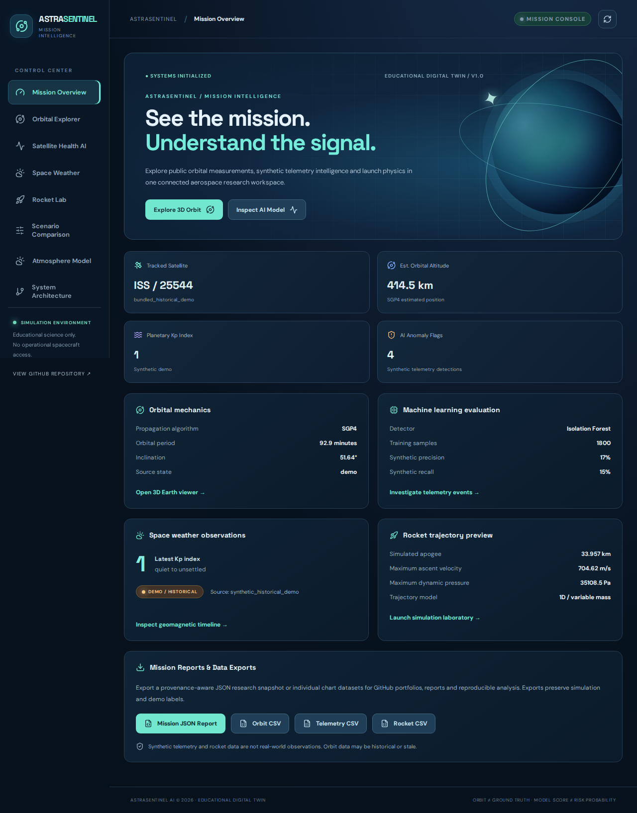
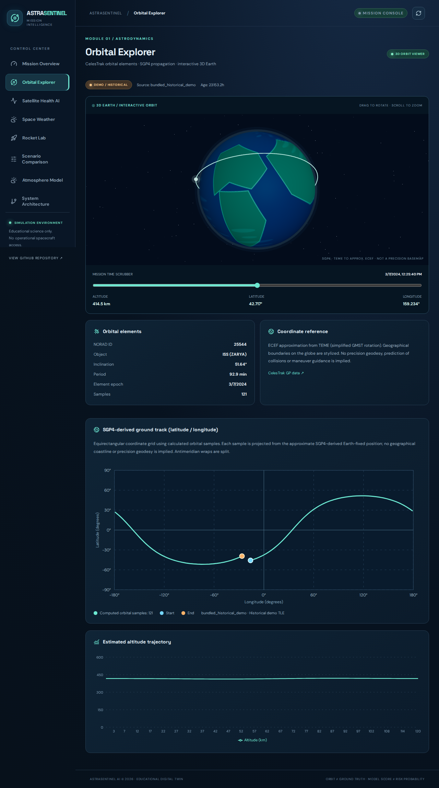
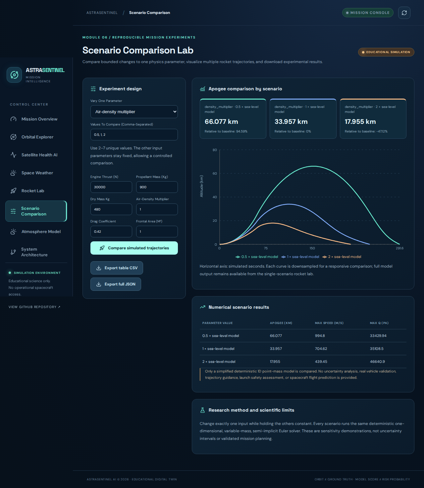
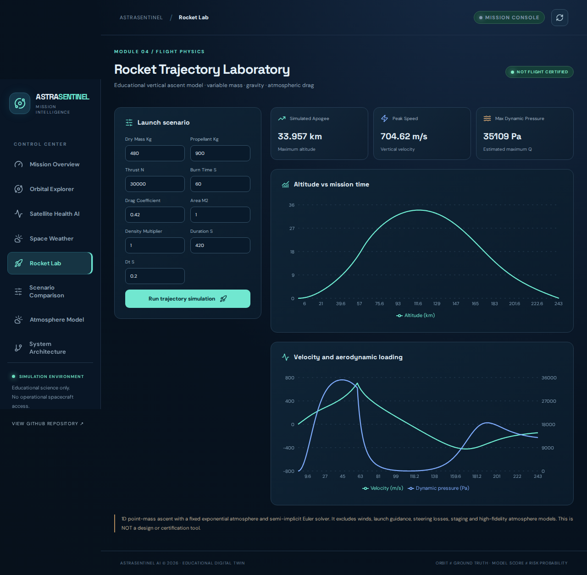
Browser captures are created by the automated offline Docker/Chromium tests, then committed with the scientific artifacts. Open full-resolution screenshots and provenance ↗
/ REPRODUCIBLE SCIENTIFIC OUTPUT
These ten SVG plots and accompanying CSV/JSON files are generated by AstraSentinel's actual Python code, using explicitly historical or synthetic offline inputs. Illustrations and measured observations are never conflated.
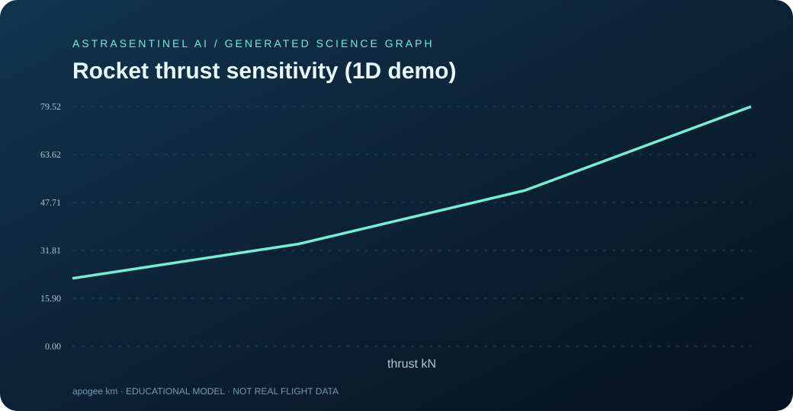
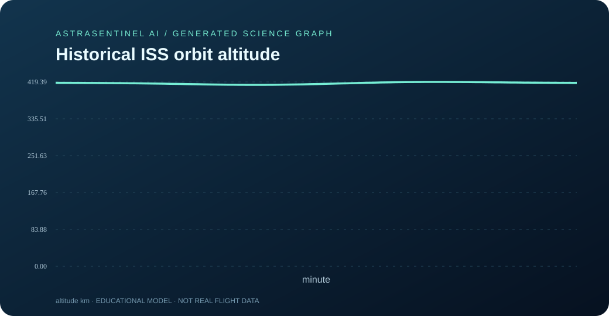
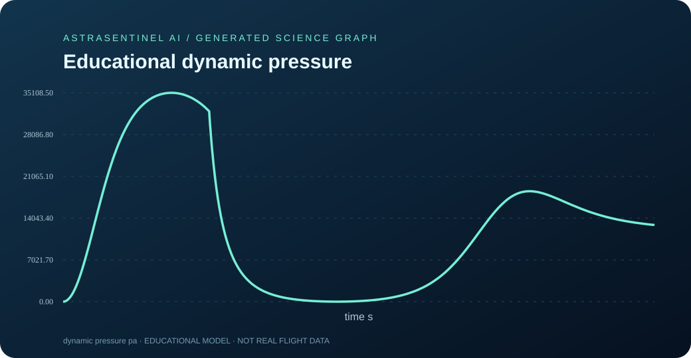
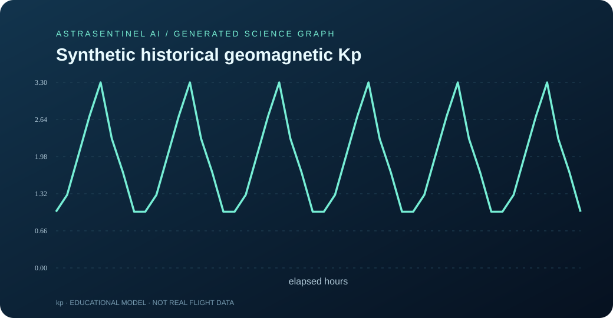
Open all ten computed scientific charts and CSV/JSON datasets ↗
/ ORIGINAL VISUAL PORTFOLIO
These are original SVG vector illustrations for the project. Concept charts, graphics and mockups are not real mission screenshots or current satellite observations.
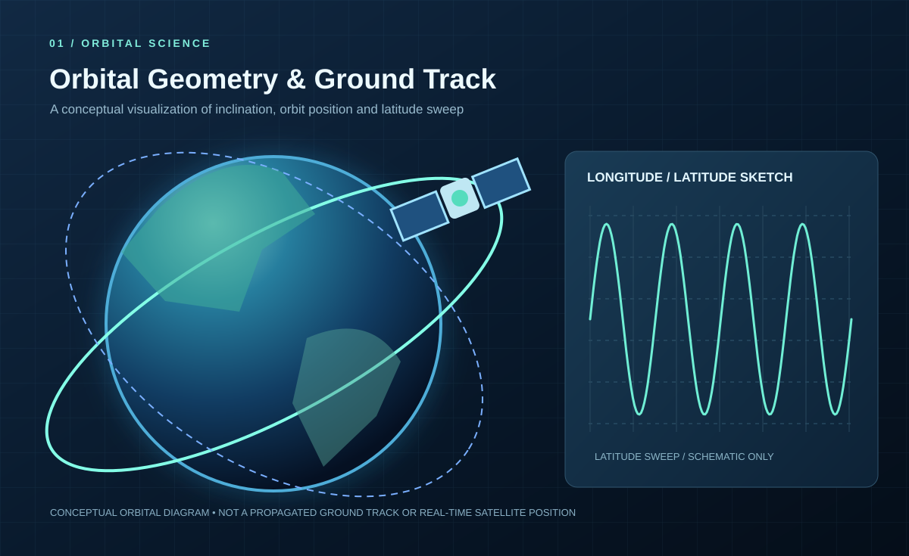
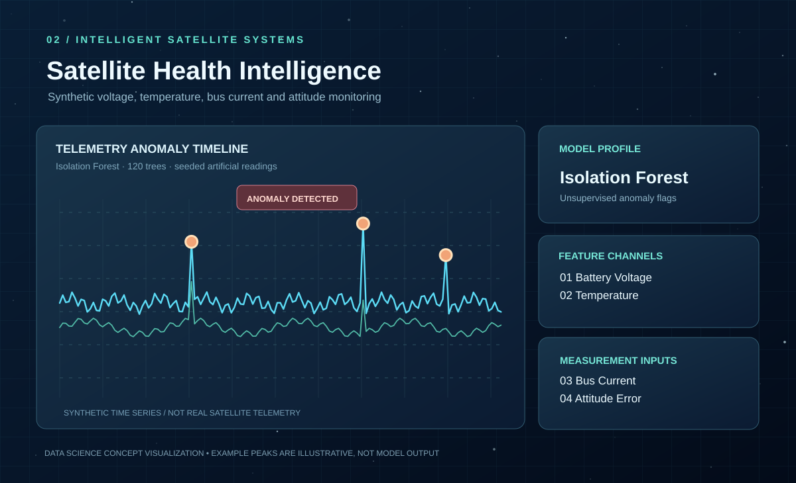
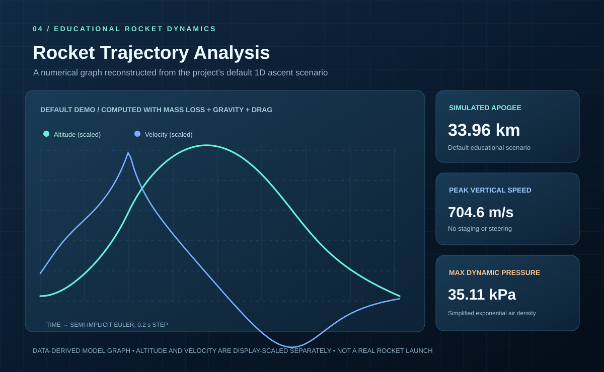
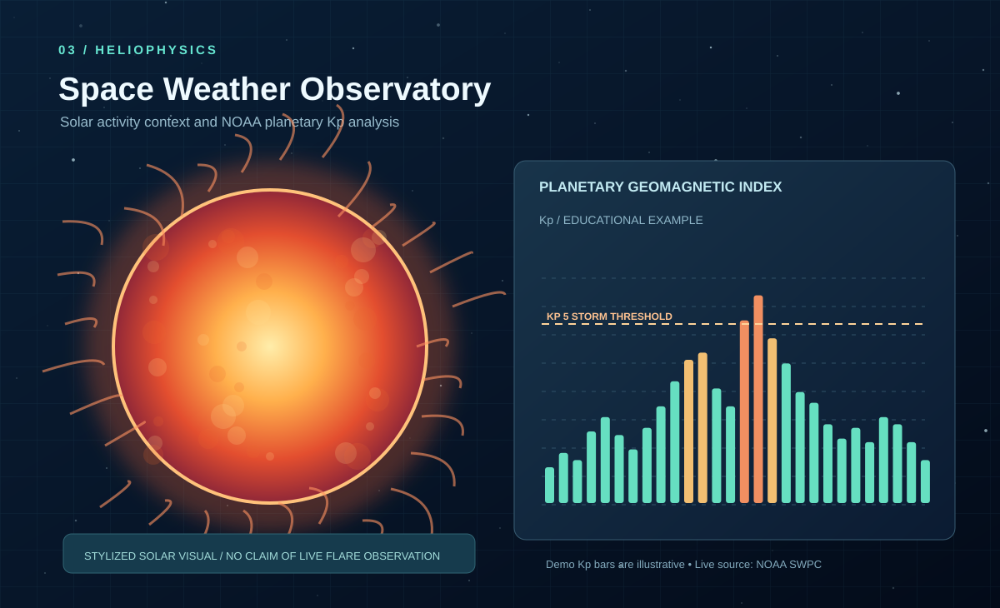
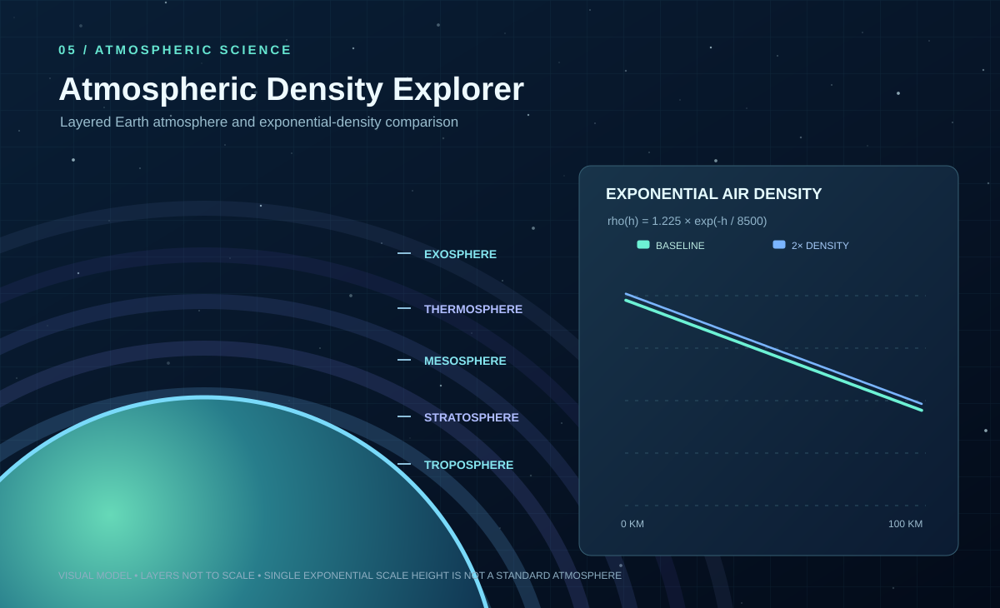
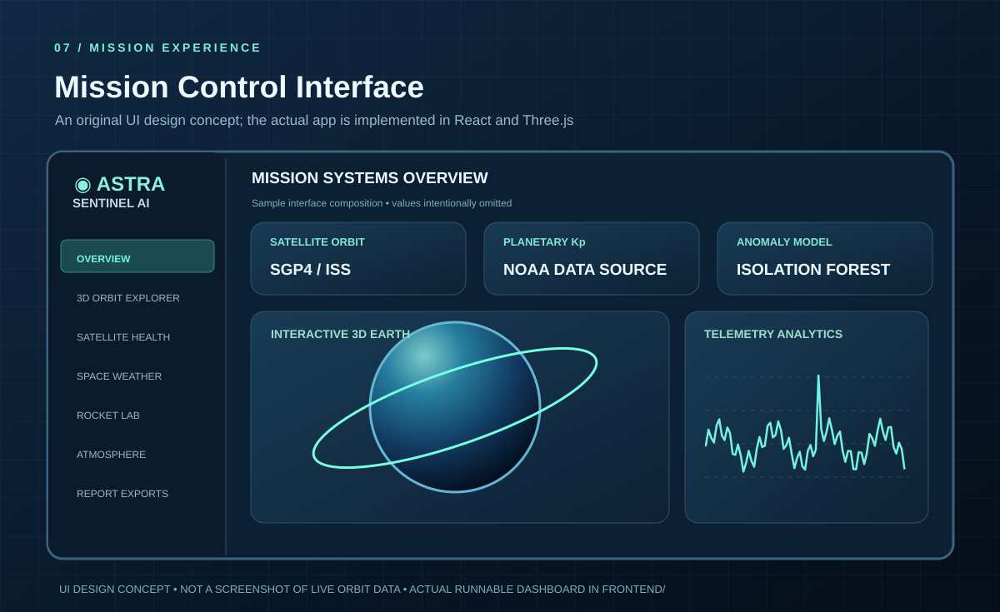
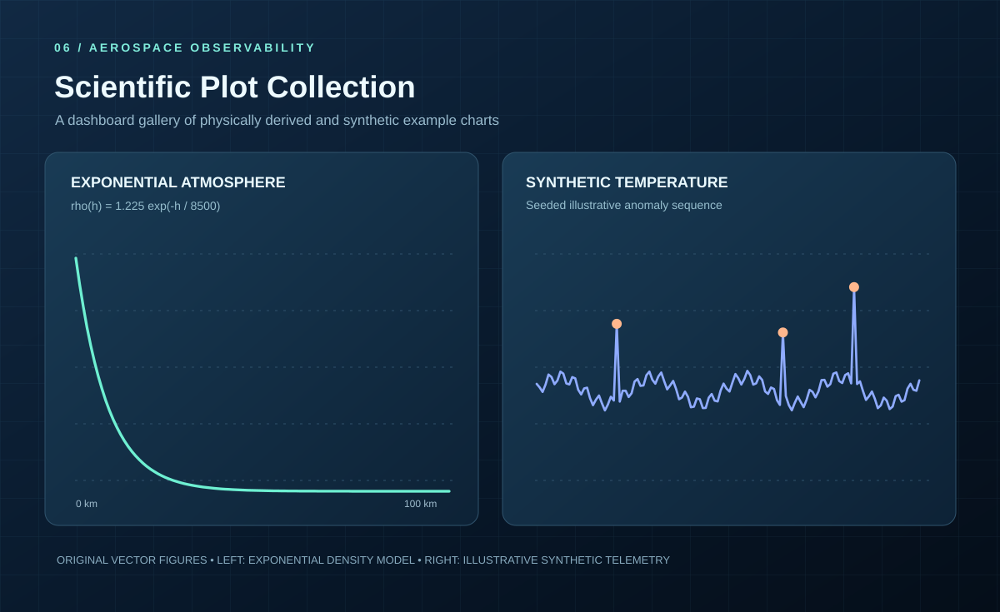
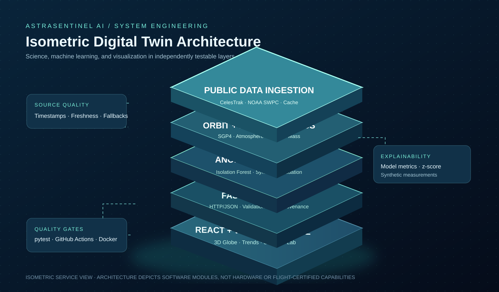
/ SOFTWARE ENGINEERING
Clone the repository and start the React/nginx frontend and FastAPI backend with Docker Compose. The dashboard is available at localhost:3000.
git clone https://github.com/harshakavali81-collab/AstraSentinel-AI.git
cd AstraSentinel-AI
docker compose up --build/ OPEN-SOURCE PORTFOLIO PROJECT
Browse the source code, API documentation, tests, model limitations and reproducible reports.